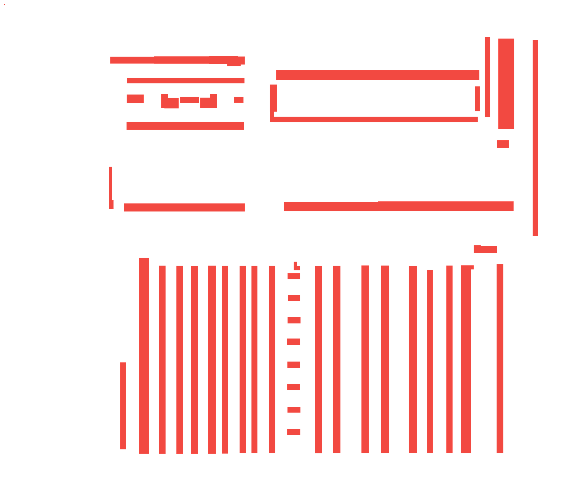
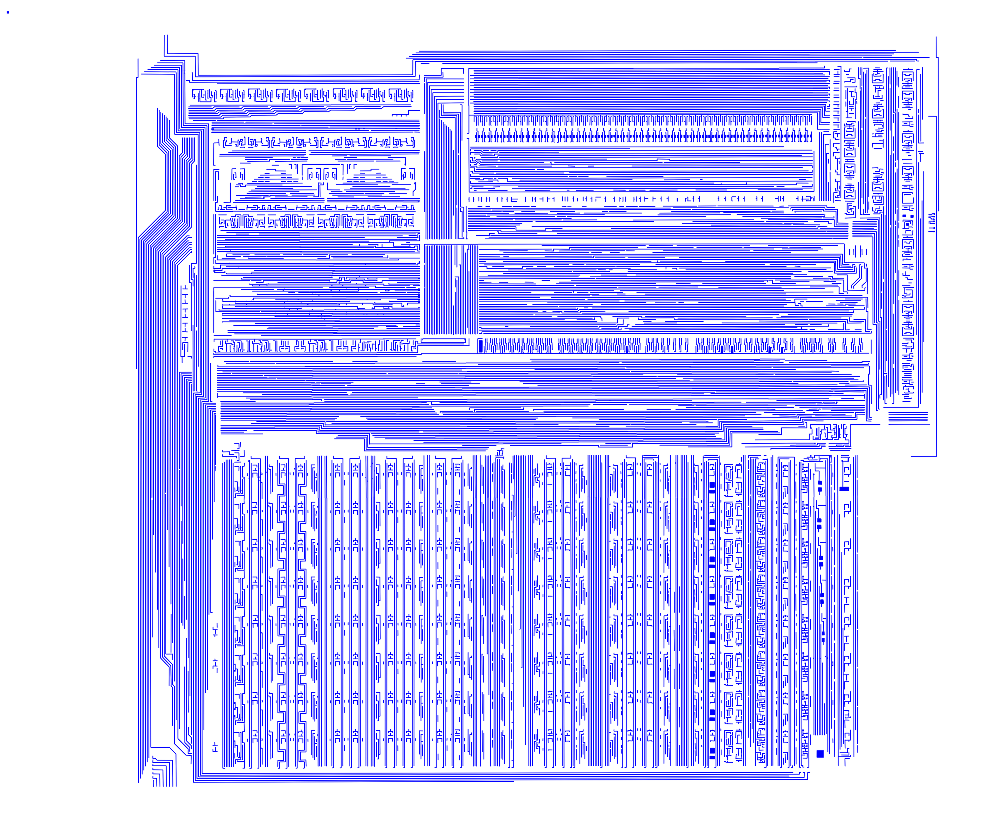
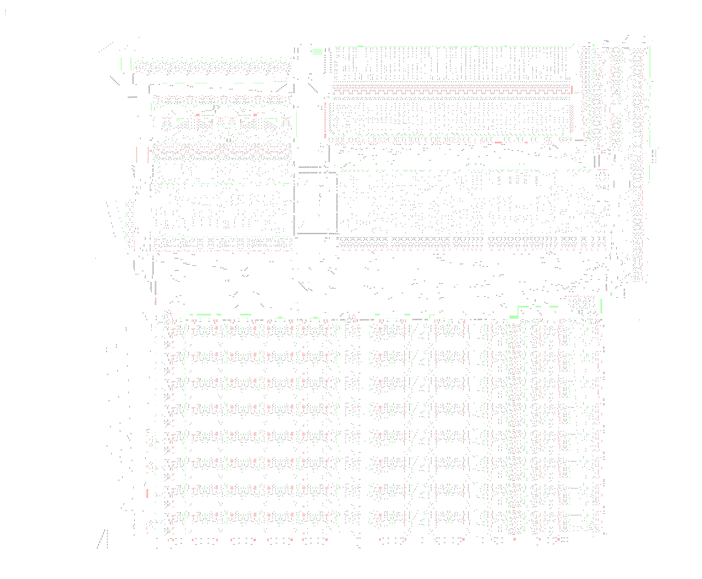
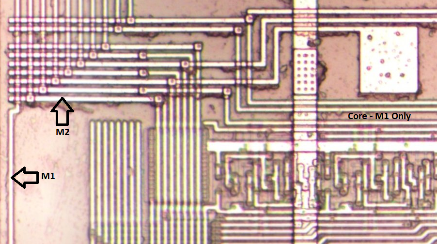
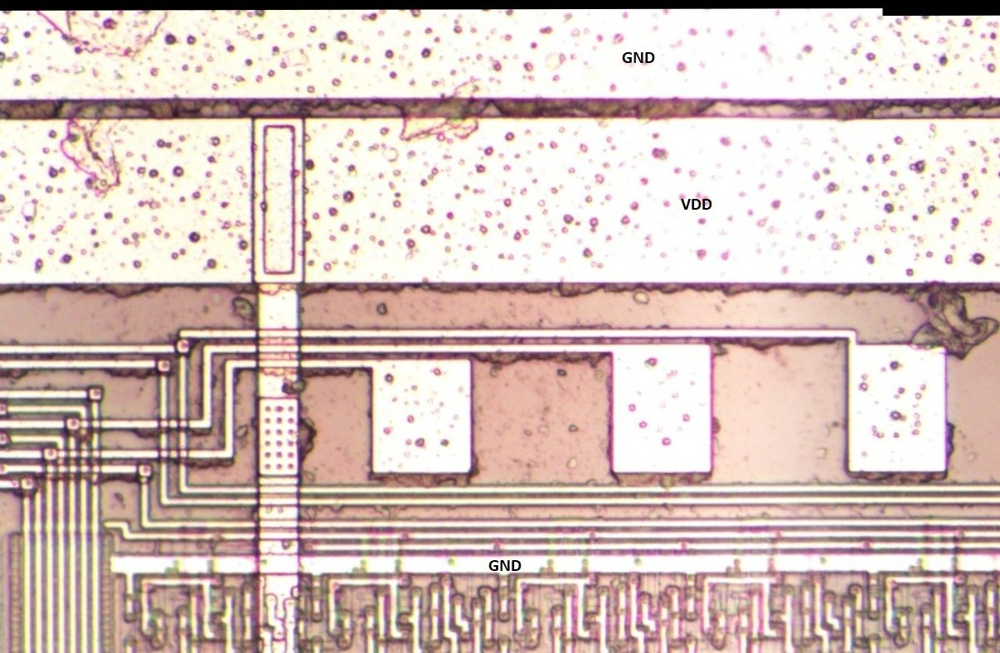
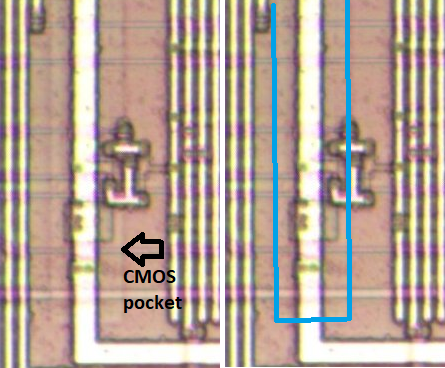
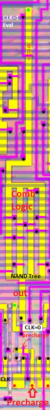
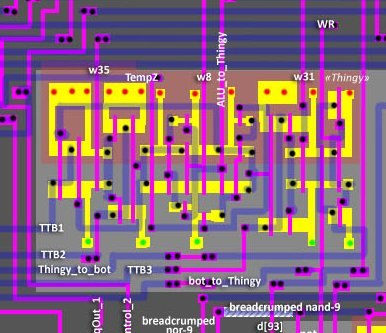
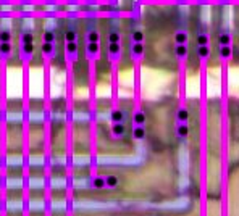

Notes on Topology
| Diffusion | Pockets | Poly | Metal | Vias |
|---|---|---|---|---|
 |
 |
 |
 |
 |
Topo Sources: https://drive.google.com/drive/u/2/folders/1deuhwmRb-PVv-K7pEllSLKQda2ft94Mk
⚠️ A pedantic circuit engineer will suffer a lot and probably cry from the quality of the masks. But it happened this way, because in several stages of polishing I was not able to fully combine all the layers due to optical distortions and uneven stitching of the slides. Therefore, if you need to do something else with the masks other than thoughtful observation, additional "rectification" will be required.
- The main part of the DMG-CPU SoC is based on standard cells, CMOS, 2 layers of metal
- The embedded CPU core is "Hand-made" CMOS, using 1 layer of metal.
Here you can see how the 2-layer integration is transitioning into a 1-layer core implementation:

The processor uses hybrid technology:
- Part of the circuitry is based on dynamic logic
- Some of the circuitry is based on convenient CMOS
VDD/GND

Wells
N-wells for P-diffusion.
Here you can see the CMOS "pockets":

Dynamic Logic
Dynamic logic is used mostly for decoders:

- In the first half-cycle (CLK=0) a Precharge is made
- In the second half-cycle (CLK=1) a logical operation is performed
https://en.wikipedia.org/wiki/Dynamic_logic_(digital_electronics)
CMOS Logic
The upper right corner is built almost entirely on CMOS cells (in fact, there are not really standard cells, but partially cellular structures, sometimes slightly modified, partially custom).
Elsewhere, too, there is complementary logic in the form of individual circuit elements.
Example:

Pignose Vias

For the interconnection, paired vias are used. Twice as much work.
Polarity
After studying a large portion of the processor, it became clear that SHARP developers are nice guys and generally prefer to use signals in direct polarity (as opposed to the perverts from Zilog and Z80).
If some signals turn out to be in inverse polarity - this will be discussed on a case-by-case basis.
Buried Contacts
None. If you want to connect poly and diffusion side by side, a small bridge of M1 is used.
Perfectly Amount of Silicon
The SM83 topology has one interesting property.
Usually studying chips is a time-consuming process and in the process of studying some part you sometimes have to wonder - "When will it end?". Usually after zooming out the picture remains not even half done 😄
But with SM83 it happens quite uniquely - you just have to think about it and the processing of the next section is immediately finished on time. Not sooner or later.
I think this is an important feature, and it's worth mentioning here.